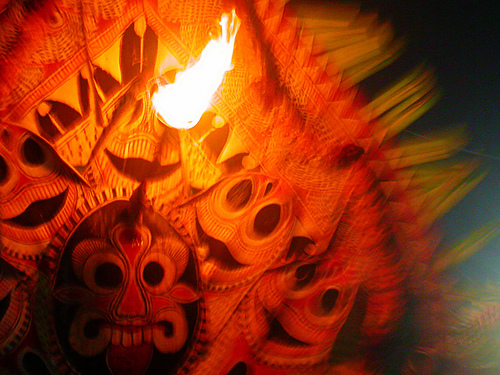
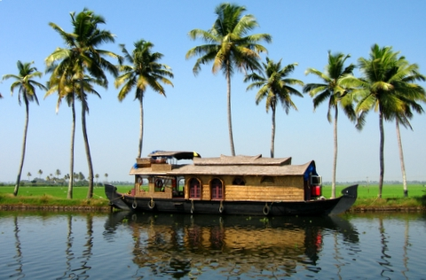

KASARAGOD :
Kasargod, the land of seven languages and several cultures.
The name, Kasaragod, is said to be derived from the word Kusirakood meaning Nuxvomica forests (Kanjirakuttom).
Kasaragod district was formed on May 24. 1984, with the intention of bestowing maximum attention on the development of backward areas.
With the formation of the new district, comprising the erstwhile Kasaragod and Hosdurg taluks, it has become possible to develop this coastal area fruitfully.
 
HOME
NEXT